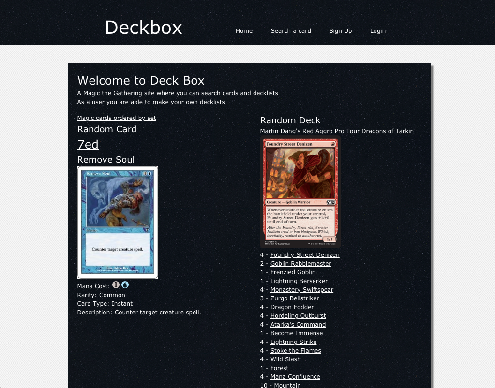
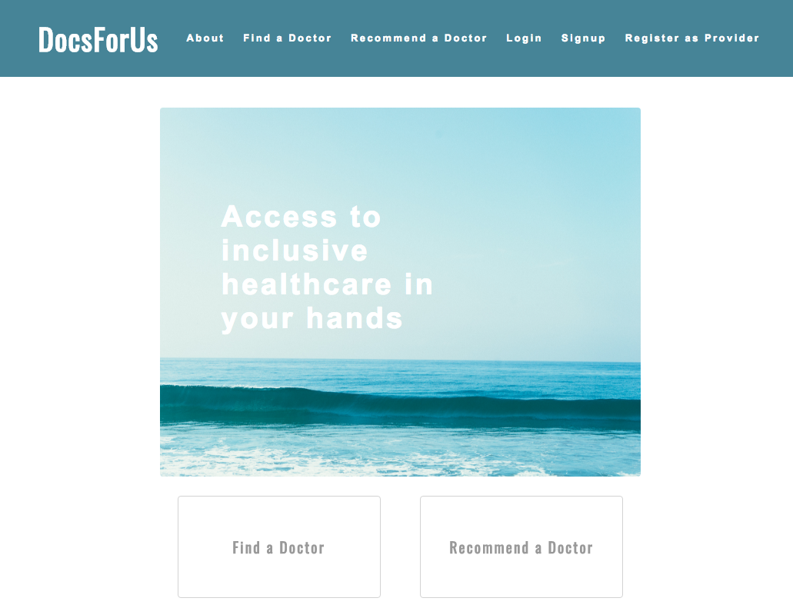

-

Deckbox is my first full stack website built from the ground up. It has it own database of magic cards that is searchable by name. Each set of Magic is organized as well. There is a user authentication system which allows users to make an account to make list’s of cards, similar to the kind taken to the Magic Pro Tour. To highlight cards and decklists a random one of each is generated each time a user visits the site.
-

Docs-for-us is a full stack Rails website with the goal of helping people find a doctor who respects their personal needs. It uses user input to fill its database, an API to locate a doctors contact information, insurances and specialties by their name and city. Users register accounts and are able to leave reviews and add doctors they loved with tags to help users search doctors who fit their needs.